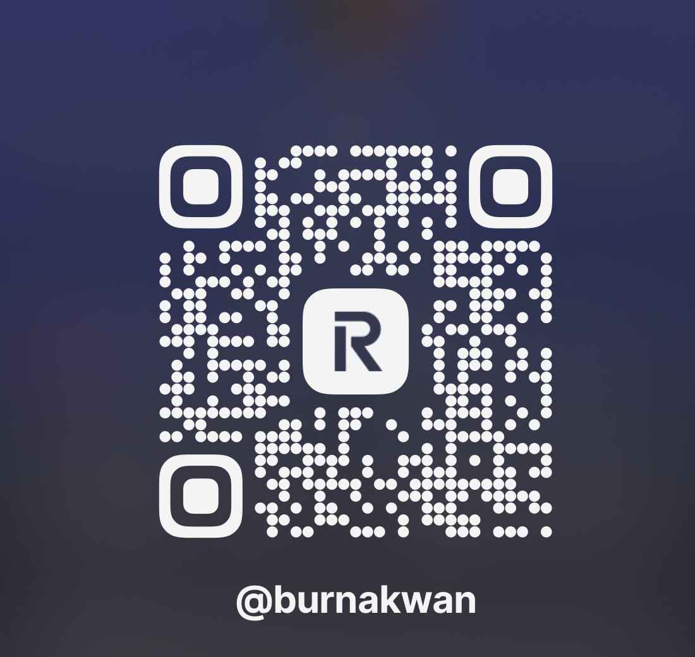

Aiding Heart for the Voiceless – قلب يُعين من لا صوت له
Salam Aid wurde gegründet, um aufrichtige Hilfe und Hoffnung in Regionen zu bringen, die unter Krieg, Missbrauch und menschlichem Leid leiden. Unsere Vision ist es, Brücken des Friedens zu bauen und die Stimmen der Unterdrückten zu stärken.
Wir möchten transparent und ehrlich helfen. 85% aller Spenden werden direkt für humanitäre Zwecke eingesetzt, die restlichen 15% werden für den Erhalt der Plattform, Kommunikation und notwendige Grundkosten verwendet.
Oder scanne zum Spenden:
Jeder Unterstützer wird mit einem Dank erwähnt – wir zeigen Wertschätzung offen auf unserer Seite (außer bei Wunsch auf Anonymität). Gemeinsam schaffen wir Veränderung.
Wir danken von Herzen jedem Unterstützer. Ihre Freundlichkeit bringt Licht und Hilfe dorthin, wo sie am meisten gebraucht wird.
Vollständige Namen und Spendenbelege werden hier für maximale Transparenz angezeigt, sobald Unterstützung eingeht. ❤️